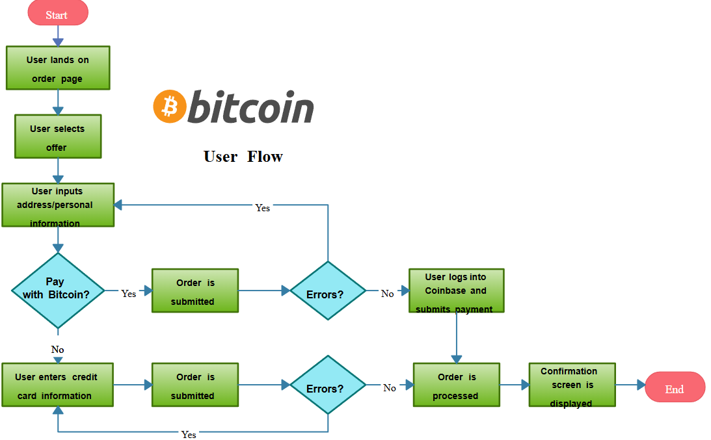

Flowchart ehk vooskeem on diagramm, mis esitab protsessi, süsteemi või algoritmi samm sammult.
See on visuaalne kaart sellest, kuidas andmed liiguvad ja milliseid otsuseid programm teeb.
Vooskeeme kasutatakse tarkvaraarenduses loogika planeerimiseks enne koodi kirjutamist.
Need on asendamatud keeruliste "jah/ei" valikutega protsesside kirjeldamisel ja vigade otsimisel (debugging).
Igal kujundil on vooskeemis oma kindel ülesanne:
| Nimi | Sümbol | Kirjeldus |
|---|---|---|
| Protsess (Process) | Ristkülik | Tegevus või operatsioon. |
| Voojoon (Flow line) | Nool | Näitab protsessi liikumise suunda. |
| Terminal (Start/End) | Ovaal | Protsessi algus- või lõpp-punkt. |
| Otsus (Decision) | Romb | Valikukoht, kus tehakse otsus. |
| Ühendaja (Connector) | Ring | Kontrollpunkt või ühenduskoht. |
| Ettevalmistus (Preparation) | Kuusnurk | Algseadistus enne protsessi algust. |
| Alternatiivne protsess | Ümarate nurkadega ristkülik | Tavapärasele protsessile alternatiivne tee. |
| Katkendlik voojoon | Katkendlik nool | Alternatiivne suund või info liikumine. |
Selle skeemi peal on näha andmete sisestamine, vahetuse arvutamine ja tulemuse kuvamine.
See näitab, kuidas kasutaja sisestab bitcoini koguse, süsteem arvutab selle väärtuse ja kuvab tulemuse.
